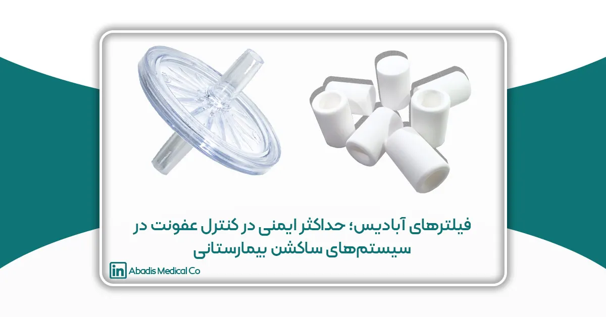

در مراکز درمانی، کنترل عفونت یکی از اساسیترین معیارهای حفظ سلامت بیماران و کادر درمان است. سیستمهای کیسه ساکشن یکبارمصرف به دلیل تماس مستقیم با ترشحات، خون و ذرات آلوده، یکی از حساسترین نقاط در گردش عفونت بیمارستانی به شمار میروند.
هرگونه نقص در فیلتراسیون، میتواند زمینه انتقال آلودگی به پمپ مرکزی، لولههای ساکشن، محیط بیمارستان و حتی کادر درمان را فراهم کند.
شرکت آبادیس با توسعه و تولید مجموعهای از فیلترهای ویروسی–آنتیباکتریال و فیلترهای قطعکننده سینتره (Sintered Safety Filters)، راهکاری علمی، مطمئن و کاملاً مطابق استانداردهای بینالمللی برای تأمین ایمنی در سیستمهای ساکشن ارائه کرده است.
اهمیت شاخصهای BFE و VFE در فیلتراسیون پزشکی
کیفیت عملکرد فیلترهای بیمارستانی معمولاً بر اساس دو شاخص کلیدی سنجیده میشود: BFE و VFE. این شاخصها تعیین میکنند که فیلتر تا چه حد توانایی جلوگیری از عبور عوامل بیماریزا را دارد.
BFE چیست؟ (Bacterial Filtration Efficiency)
شاخص BFE راندمان فیلتراسیون باکتریایی را نشان میدهد و بیان میکند که یک فیلتر چند درصد از ذرات باکتریایی را میتواند حذف کند.
برای مثال:
- BFE بالاتر از 99.999% یعنی فیلتر تقریباً تمام باکتریها را متوقف میکند.
در محیطهایی مانند اتاق عمل، ICU و CCU، این عملکرد برای جلوگیری از انتقال آلودگی کاملاً حیاتی است.
VFE چیست؟ (Viral Filtration Efficiency)
شاخص VFE میزان کارایی فیلتر در مسدود کردن ذرات ویروسی را اندازه میگیرد. ویروسها کوچکتر از باکتریها هستند، بنابراین دستیابی به:
- VFE > 99.999%
نشاندهنده عملکرد بسیار قوی و قابلاعتماد فیلتر در حذف ویروسهاست.
این شاخصها در کنار یکدیگر توصیفکننده راندمان فیلترهای ویروسی–آنتیباکتریال هستند.
استانداردهای جهانی مرتبط با تست BFE و VFE
فیلترهای حرفهای ساکشن باید مطابق استانداردهای معتبر جهانی آزمایش شوند، از جمله:
ASTM F2101
استاندارد اصلی سنجش راندمان فیلتراسیون باکتریایی (BFE).
EN 14683
استاندارد اروپایی برای ماسکها و فیلترهای پزشکی، قابل استفاده برای تست عملکرد فیلتر.
روشهای آزمایشگاهی VFE
استفاده از ویروسهای استاندارد در شرایط کنترلشده برای تعیین راندمان فیلتراسیون ویروسی.
پیروی از این استانداردها تضمین میکند که فیلتر در شرایط واقعی بالینی نیز عملکرد مطمئن خود را حفظ کند.
محصول اول: فیلتر آنتیباکتریال آبادیس (Viral & Antibacterial Filter)VFE/BFE > 99.999% | قدرت فیلتراسیون همزمان ویروس و باکتری
فیلتر آنتیباکتریال آبادیس — که در صنعت با نام فیلتر ویرال (Viral Filter) نیز شناخته میشود — یک فیلتر چندلایه با راندمان بسیار بالا در حذف ذرات ویروسی و باکتریایی است.
این فیلتر برای نصب روی کیسههای ساکشن یکبارمصرف طراحی شده و مانع ورود آئروسلها و ذرات آلوده به سیستم ساکشن مرکزی میشود.
مزایا
- راندمان بسیار بالا در حذف ویروسها و باکتریها
- کاهش خطر انتقال عفونت بیمارستانی
- پیشگیری از آلودگی پمپ و لولههای مرکزی
- محافظت از کادر درمان هنگام جابهجایی کیسه
- عملکرد پایدار حتی در حجم بالای ساکشن
کاربردها
-
اتاقهای عمل
-
ICU و CCU
-
اورژانس
-
بخشهای عفونی و ایزوله
-
بخشهای مراقبت ویژه کودکان و نوزادان
حفاظت کامل از سیستم ساکشن مرکزی | قطع خودکار جریان در صورت سرریز
فیلتر قطعکننده آبادیس — که با نام Sintered Filter یا «فیلتر محافظ سرریز» نیز شناخته میشود — یک لایه ایمنی بسیار مهم در سیستم ساکشن است.
این فیلتر زمانی که کیسه ساکشن از مایع پر میشود، جریان را بهصورت خودکار کاملاً مسدود میکند و مانع از ورود ترشحات به پمپ مرکزی میشود.
مزایا
- محافظت کامل از سیستم ساکشن مرکزی
- جلوگیری از آسیب پمپ و آلودگی سیستم
- قطعکننده خودکار در صورت پر شدن یا سرریز
- ساختار مقاوم و متراکم با تکنولوژی Sintered
- مناسب برای کیسه ساکشن یکبارمصرف آبادیس
اهمیت این فیلتر
سیستم ساکشن یکی از حیاتیترین اجزای اتاق عمل است. ورود مایع به پمپ مرکزی میتواند باعث:
- خرابی پرهها
- آلودگی مسیر
- خاموشی سیستم
- و حتی ایجاد خطر برای بیمار
شود. فیلتر قطعکننده جلوی تمام این مشکلات را میگیرد.
چرا فیلترهای آبادیس برای سیستمهای ساکشن ضروریاند؟
- کاهش خطر عفونت بیمارستانی
- محافظت کامل از سیستم ساکشن مرکزی
- ایمنی کادر درمان و بیماران
- کیفیت و دوام بالا مطابق استانداردهای بینالمللی
- سازگار با تمامی مدلهای کیسه ساکشن آبادیس
- عملکرد ثابت در محیطهای پرریسک
استفاده از این فیلترها، سطح ایمنی یک مرکز درمانی را بهشکل قابلتوجهی افزایش میدهد و از بروز پیامدهای پرهزینه جلوگیری میکند.
جمعبندی
فیلترهای آبادیس — شامل فیلتر آنتیباکتریال (Viral Filter) و فیلتر قطعکننده سینتره (Sintered Safety Filter) — یک راهکار حرفهای و استاندارد برای کنترل عفونت و حفاظت از سیستمهای ساکشن بیمارستانی هستند.
با راندمان BFE/VFE > 99.999%، حذف ذرات آلوده و حفاظت از پمپ مرکزی، این فیلترها نقشی کلیدی در ایجاد محیطی ایمن، پاکیزه و قابلاعتماد در بخشهای درمانی دارند.
این دو محصول مکمل در کنار کیسههای ساکشن یکبارمصرف آبادیس، یک سیستم کامل کنترل عفونت را برای بیمارستانها فراهم میکنند که مطابق استانداردهای جهانی، پایدار و کاملاً قابل اتکا است.
منابع (References)
- ASTM F2101-19: Standard Test Method for Evaluating the Bacterial Filtration Efficiency (BFE) of Medical Face Mask Materials. ASTM International.
-
EN 14683:2019 – Medical face masks — Requirements and test methods. European Committee for Standardization (CEN).
-
Rengasamy, S., Eimer, B., & Shaffer, R. (2009). Evaluation of the Filtration Performance of Various Respiratory Masks. Annals of Occupational Hygiene.
-
Oberg, T., & Brosseau, L. (2008). Surgical mask filter and fit performance. American Journal of Infection Control.
-
Hinds, W. C. — Aerosol Technology: Properties, Behavior, and Measurement of Airborne Particles. Wiley-Interscience.
-
CDC — Centers for Disease Control and Prevention. Guidelines for Preventing Transmission of Infectious Agents in Healthcare Settings.
-
WHO — World Health Organization. Infection Prevention and Control in Health Care Facilities.
-
Standards for viral filtration efficiency testing using bacteriophage phiX174 and aerosolized viral models (Nelson Labs White Papers).